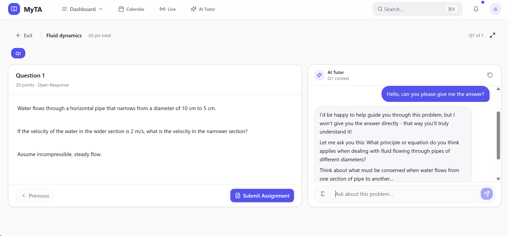

Guided AI during assignments
Students get help while they are still reasoning through the task, not only after work is submitted.
AI in the homework workflow
MyTA brings guided AI into the assignment workflow, so instructors can see how students use AI, where they struggle, and what needs attention before learning disappears into a final submission.

Real MyTA product screen
The real problem
Students use AI before they submit. Bans and detectors can react later, but they do not show whether learning happened during the work.
AI use happens before the final submission.
Detectors miss confusion, reasoning, and help-seeking.
External AI tools pull learning data out of the course workflow.
What MyTA changes
MyTA keeps AI support tied to course materials, student work, and instructor visibility.
Students get help while they are still reasoning through the task, not only after work is submitted.
Instructors can see AI use, confusion, and help-seeking patterns before they are hidden in a final answer.
Course materials and assignment directions shape the support, so AI becomes less disconnected from teaching.
How it works
Add materials, directions, and boundaries for AI help.
AI support sits in the assignment process instead of a separate tab.
Confusion and help-seeking patterns become visible earlier.
Market context
See the product
Pilot waitlist
MyTA is looking for professors, instructors, academic technology teams, and university stakeholders who may be open to piloting the software.